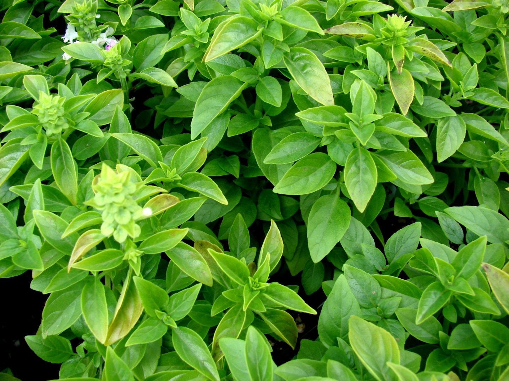

📖 Descrição
O manjericão (Ocimum basilicum) é uma planta aromática muito utilizada na culinária e na medicina popular. Suas folhas possuem aroma intenso e sabor agradável, sendo ingrediente tradicional em molhos, saladas, massas, pizzas e diversas receitas.
🌱 Cuidados
- Plantar em solo fértil e bem drenado.
- Manter irrigação regular, sem encharcar.
- Cultivar em local ensolarado.
- Realizar podas frequentes para estimular novas folhas.
- Adubar periodicamente com matéria orgânica.
🌎 Origem
Originário da Ásia tropical, especialmente da Índia.
🐝 Atrai quais polinizadores?
Suas flores atraem abelhas, borboletas e diversos insetos polinizadores importantes para a biodiversidade.
🍽️ Parte comestível
Folhas, flores e brotos jovens.
💚 Benefícios para a saúde
- Rico em antioxidantes.
- Possui ação anti-inflamatória.
- Auxilia na digestão.
- Contribui para o fortalecimento do sistema imunológico.
- Fonte de vitaminas A, C e K.
🌼 Curiosidade
O manjericão é considerado uma planta companheira na horta, ajudando a afastar algumas pragas e favorecendo o desenvolvimento de outras culturas, como o tomateiro.
🌍 Importância para o meio ambiente
Suas flores fornecem néctar para abelhas e outros polinizadores, contribuindo para o equilíbrio ecológico e aumentando a biodiversidade da horta escolar.
🌾 Época de plantio
Pode ser cultivado durante todo o ano em regiões de clima quente, preferindo temperaturas entre 20°C e 30°C.
📱 Acesse esta página pelo QR Code

Escaneie o QR Code para acessar esta página pelo celular.